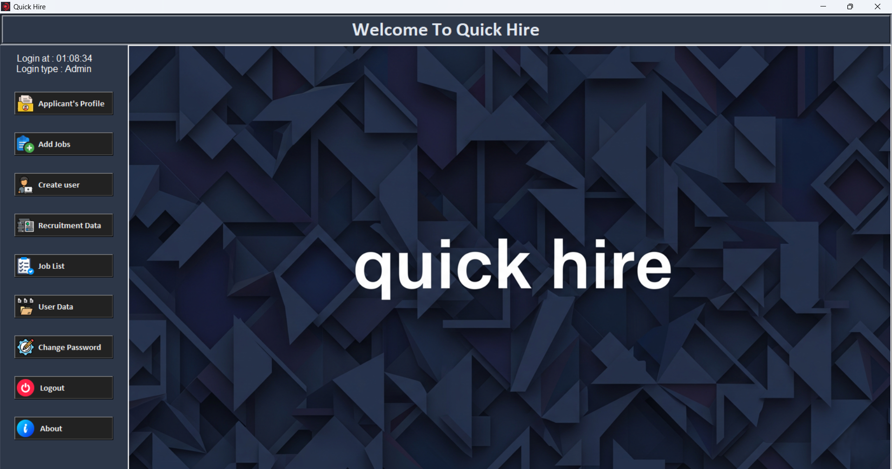
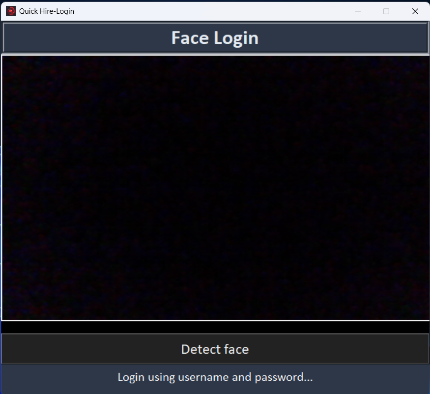
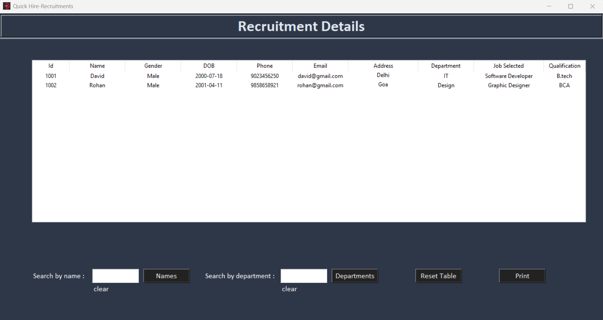
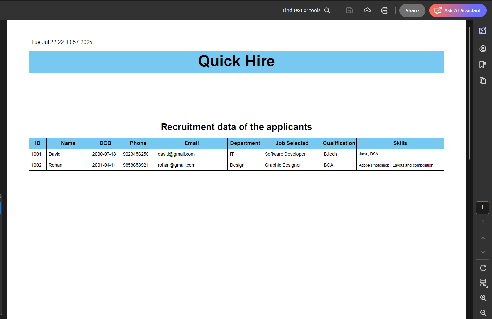
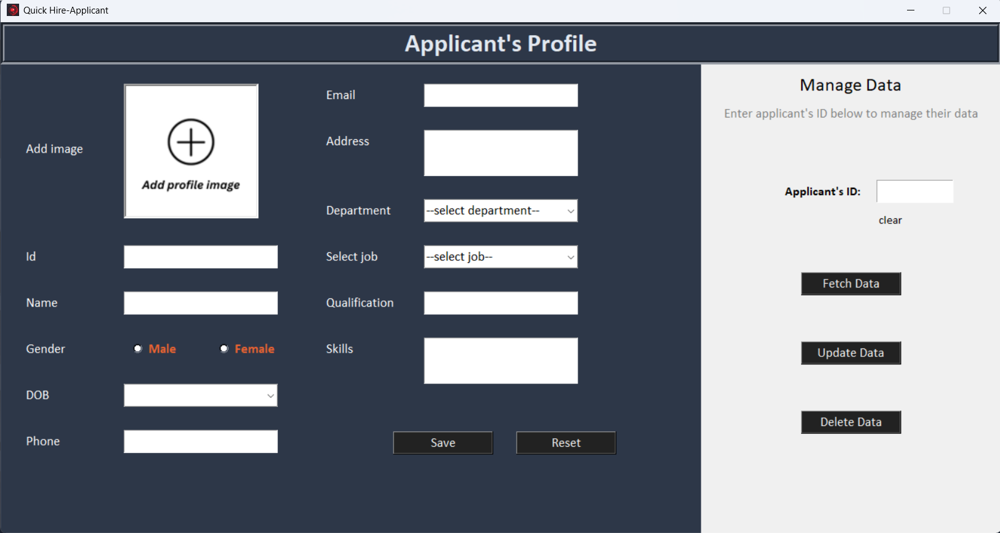

As mentioned above Quick Hire is an pure python based application, but it is made by combining various python modules.
The standard GUI (Graphical User Interface) library in Python used to create desktop applications with windows, buttons, labels, and other widgets.
A submodule of tkinter that provides themed widgets with a modern look, like Combobox, Treeview, and more customizable versions of standard widgets.
A library for connecting to and interacting with MySQL databases using Python. It allows executing SQL queries, fetching data, and managing database operations.
A Python library for generating PDF documents easily. It supports text, images, and basic layout control, and is useful for creating reports or printable documents.
A built-in module that provides functions to interact with the operating system, such as file and directory manipulation, environment variables, and process management.
A built-in module that provides time-related functions, such as delays (sleep()), timestamps, and formatting or measuring time intervals.
A powerful library built on dlib for recognizing and manipulating faces in images. It can detect faces, compare them, and extract facial features.
A built-in module for opening URLs in the default web browser from within a Python script.
A Python imaging library for opening, editing, and saving images in various formats. It supports basic operations like cropping, resizing, filtering, and drawing on images.
A Python wrapper for the OpenCV library, used for image processing, computer vision, and machine learning tasks like face detection, object tracking, and video manipulation
XAMPP is a free and open-source web server solution stack that includes Apache, MySQL (or MariaDB), PHP, and Perl. It's primarily used to set up a local server environment on Windows, Linux, or macOS. Developers use XAMPP to build and test web applications locally before deploying them online. The control panel makes it easy to start and stop services like Apache and MySQL with a simple interface. It's widely used in PHP development and acts as a reliable backend for testing server-side scripts and managing databases locally.
MySQL is a powerful, open-source relational database management system (RDBMS) that is widely used in web development. It organizes data into tables and supports SQL (Structured Query Language) for querying and managing that data. With MySQL, users can perform complex searches, joins, and data manipulations efficiently. In Python applications, libraries like pymysql or mysql-connector-python can be used to interact with MySQL databases. MySQL is commonly used in combination with XAMPP for setting up a full-stack development environment, allowing developers to store and retrieve data for dynamic applications.
UI of the Quick Hire application is build by consider the user friendly UI. Smooth working with any lagging issues

We have added the Face Detection option which will allow users to login via face login, no need to fill up the user name and passwor it will find your face in the database permit the login

User can quickly generate the pdf of the stored data in just one click, with Print button and take and Print the data in a flashy way.


User can concurrent access the data while adding the new option , thank to the Manage Data option.
